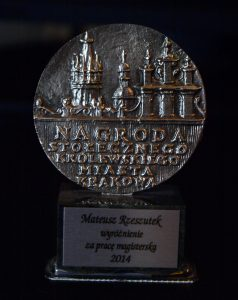
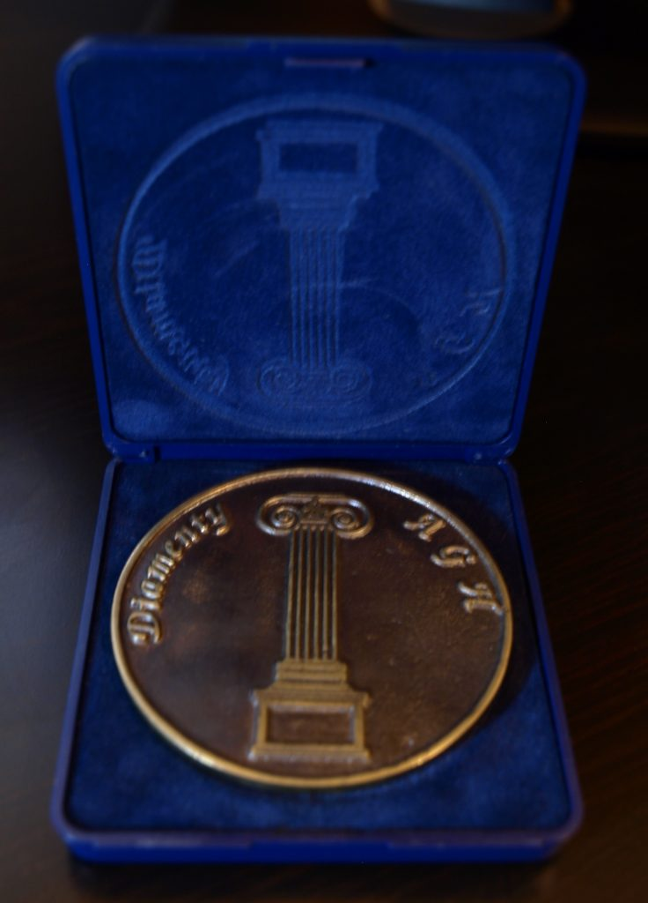
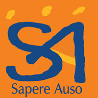

General
KRAKOW CITY AWARDS 2014
Category: Distinctions for diploma theses.
“Air quality impact assessment of Industrial Plant of Thermic Waste Processing Technology in Kracow using mathematical dispersion model CALPUFF.”
Poland, Krakow, November 6, 2014
Press releases

AGH DIAMMENTS - 15th edition
Winner of the 3rd place in the 15th edition of the competition for the best diploma thesis “DIAMENTS AGH”, organized by the AGH Student Scientific Society.
“Air quality impact assessment of Industrial Plant of Thermic Waste Processing Technology in Kracow using mathematical dispersion model CALPUFF.”
Poland, Krakow, March 31, 2014
Press releases

Sapere Auso Foundation
1st prize in the competition for the best master’s theses in the field of ecological education and environmental protection, organized by the SAPERE AUSO Foundation.
“Air quality impact assessment of Industrial Plant of Thermic Waste Processing Technology in Kracow using mathematical dispersion model CALPUFF.”
Poland, Krakow, December 9, 2014
Press releases

AGH Rector’s Award
Team 3nd degree Rector’s Award for educational achievements
AGH University of Krakow | 2022
Individual 1st degree Rector’s Award for scientific achievements
AGH University of Krakow | 2021
Individual 3nd degree Rector’s Award for scientific achievements
AGH University of Krakow | 2020
Individual 3nd degree Rector’s Award for scientific achievements
AGH University of Krakow | 2019
Team 3nd degree Rector’s Award for organizational achievements
AGH University of Krakow | 2019
Team 1st degree Rector’s Award for educational achievements
AGH University of Krakow | 2018
Sholarship
Basic, pro-quality and scientific scholarship for PhD students awarded annually
AGH University of Krakow | 10/2013 - 10/2018
Scholarship for the best environmental engineering students awarded annually
Human Capital Operational Program from ESF | 2012 - 2013
Scholarship for the best environmental engineering students awarded annually
AGH University of Krakow | 2008 - 2013